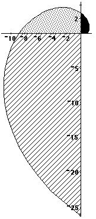
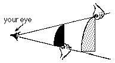
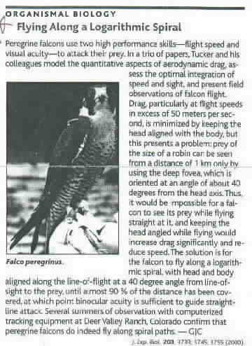

The graph of r = 2t / chapter 11
The polar graph of this spiral r = 2t . Try to make this yourself on 1/4" graph paper. t is in radians.Try this: copy the graph; glue it onto a piece of cardboard, then cut out the 3 pieces- the black, the spotted and the striped.
 
Do the "eye test"; that is, see if these pieces are the same shape. Put the black piece, the smaller, in front of the spotted piece, then move it to see if the black piece "covers" the spotted piece. See the diagram above. If you graphed this on 1/4" graph paper, you could find the area of each piece, and see what the ratios of the areas of these 90° segments is and compare that with the ratio of the straight sides of the figures.
See
"On Size and Life" by McMahan & Bonner; Scientific American
Library Series; W.H. Freeman and Co.,
